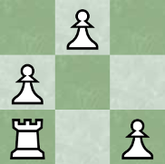

Open chess positions
Problem 628
A position in chess is an (orientated) arrangement of chess pieces placed on a chessboard of given size. In the following, we consider all positions in which
We call such a position an open position, if a rook, starting at the (empty) lower left corner and using only moves towards the right or upwards, can reach the upper right corner without moving onto any field occupied by a pawn.
Let
For example,
|  |  |
You are also given
Find